Primary Inputs
- Route/run outputs from
outputs/distribution/local_chunked_run/phase2/* - Functional-unit transformed rows in
transport_sim_rows.csv - Scenario and product assumptions from
data/inputs_local/*.csv
This release documents the production audit audit_2026-03-17 aggregating 72,872 validated runs across 8 scenarios from multi-cloud workers (4 GCP + 4 Azure), with 100% functional-unit coverage using the audit-uniform method.
kg CO2e / 1000 kcal delivered to retail (audit-uniform method)Headline finding: The BEV-vs-diesel ranking reverses depending on which FU denominator is used. Under cube-limited loading BEV outperforms diesel by ~57%; under trailer-max normalization BEV appears worse. Denominator-free metrics (tonne-km, per-mile) consistently show BEV advantage of ~36%.
Previous baseline: local_chunked_run (80 runs, 2026-03-09) retained below for reference.
dry_diesel: Kansas origin, reefer OFF, diesel powertrainrefrigerated_diesel: Texas origin, reefer ON, diesel powertraindry_bev: Kansas origin, reefer OFF, BEV powertrainrefrigerated_bev: Texas origin, reefer ON, BEV powertrainWithin each powertrain, dry/refrigerated rows share operating-condition draws (traffic, departure, ambient, stochastic delay). Paired deltas therefore isolate refrigeration + origin effects under matched operating environments.
Primary (audit-uniform method): Applied uniformly to all 72,872 rows:
payload_kg = payload_max_lb_draw * load_fraction * 0.453592kcal_delivered = payload_kg * kcal_per_kg_productco2_per_1000kcal = co2_kg_total / kcal_delivered * 1000Denominator-free alternatives (ISO 14083-aligned, FU-insensitive):
co2_per_tonne_km = co2_kg_total / (payload_kg / 1000) / distance_kmco2_per_mile = co2_kg_total / distance_milesFU sensitivity finding: Four candidate methods for computing the denominator produce divergent BEV-vs-diesel rankings. The audit-uniform method is the only one that covers all 72,872 rows with a consistent formula. See the FU Sensitivity Analysis for the full comparison.
outputs/distribution/local_chunked_run/phase2/*transport_sim_rows.csvdata/inputs_local/*.csv0.1653 kg per 13.6 kg bag (0.0121 fraction)0.029 kg/package (27–31 g sensitivity)Fail-fast checks enforce:
tru_kwh=0, tru_gal=0, refrigeration_runtime_hours=0)total_kcal_deliveredco2_per_1000kcalValidation artifact:
The production audit (2026-03-17) aggregated 72,872 validated runs (61,118 diesel + 11,754 post-fix BEV) from 4 GCP and 4 Azure workers across all 8 scenario combinations. All rows have 100% FU coverage using the audit-uniform method (payload_kg = payload_max_lb_draw * load_fraction * 0.453592). A critical BEV charging fix was applied mid-campaign: pre-fix runs had 0 charging stops, post-fix runs correctly model en-route DCFC charging events.
| Powertrain | Product | Origin | N | Mean CO2/1000kcal | P05 | P50 | P95 | Charge Stops | Distance (mi) |
|---|---|---|---|---|---|---|---|---|---|
| bev | dry | dry_factory_set | 5777 | 0.0279 | 0.0170 | 0.0271 | 0.0412 | 15.54 | 1712.2 |
| bev | dry | refrigerated_factory_set | 5777 | 0.0289 | 0.0176 | 0.0280 | 0.0427 | 15.23 | 1773.7 |
| diesel | dry | dry_factory_set | 8925 | 0.0201 | 0.0125 | 0.0148 | 0.0634 | 0.00 | 738.7 |
| diesel | dry | refrigerated_factory_set | 8925 | 0.0203 | 0.0125 | 0.0148 | 0.0649 | 0.00 | 746.2 |
| bev | refrigerated | dry_factory_set | 100 | 0.0455 | 0.0299 | 0.0441 | 0.0683 | 17.01 | 1712.2 |
| bev | refrigerated | refrigerated_factory_set | 100 | 0.0471 | 0.0310 | 0.0457 | 0.0708 | 17.13 | 1773.7 |
| diesel | refrigerated | dry_factory_set | 21634 | 0.0147 | 0.0124 | 0.0146 | 0.0173 | 0.00 | 615.9 |
| diesel | refrigerated | refrigerated_factory_set | 21634 | 0.0147 | 0.0124 | 0.0146 | 0.0173 | 0.00 | 616.6 |
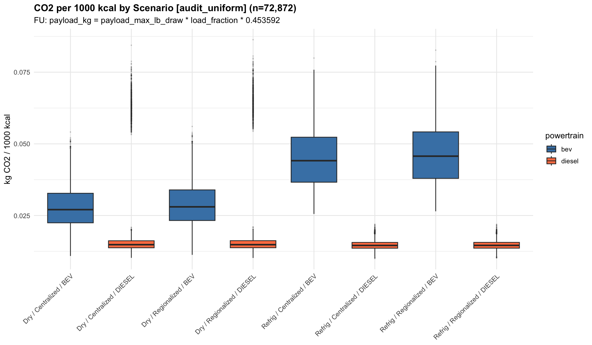
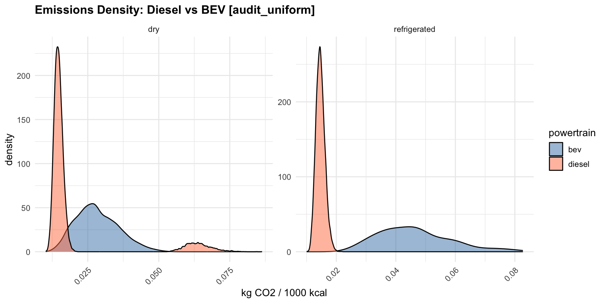
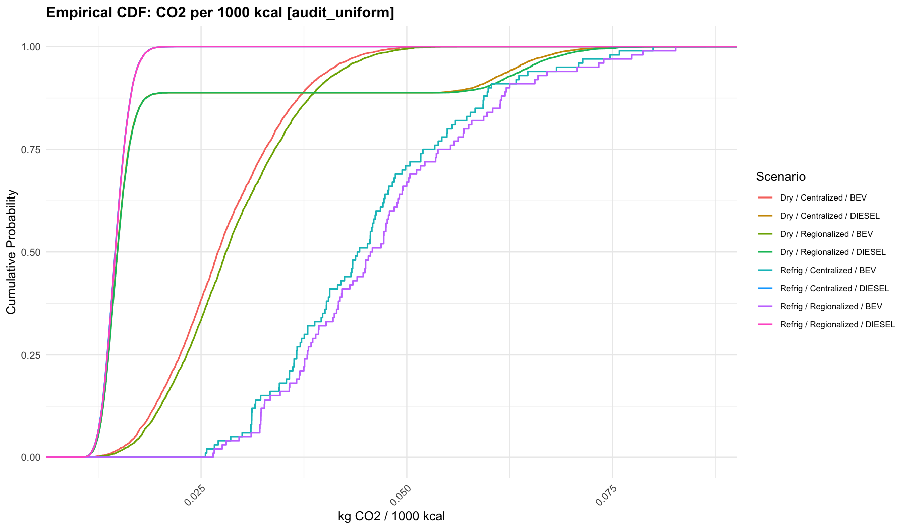
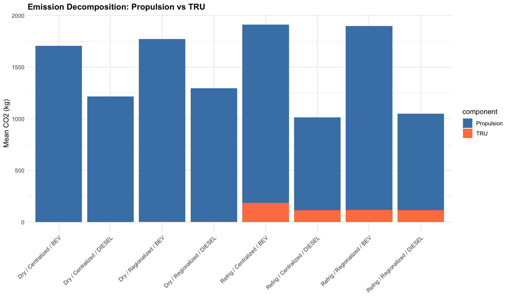
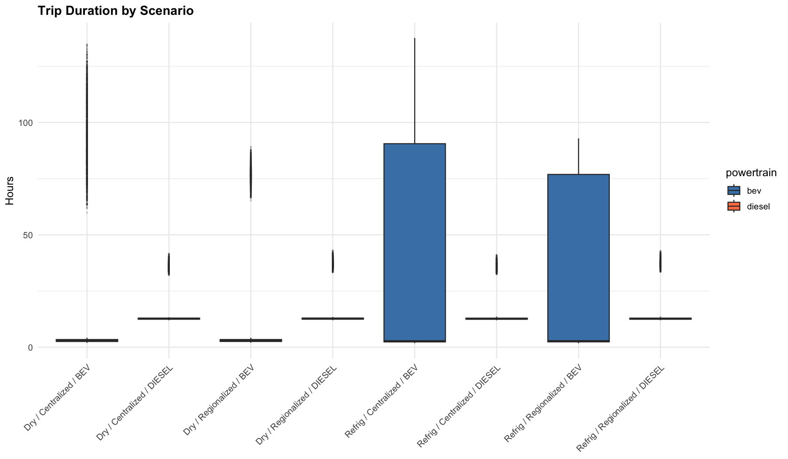
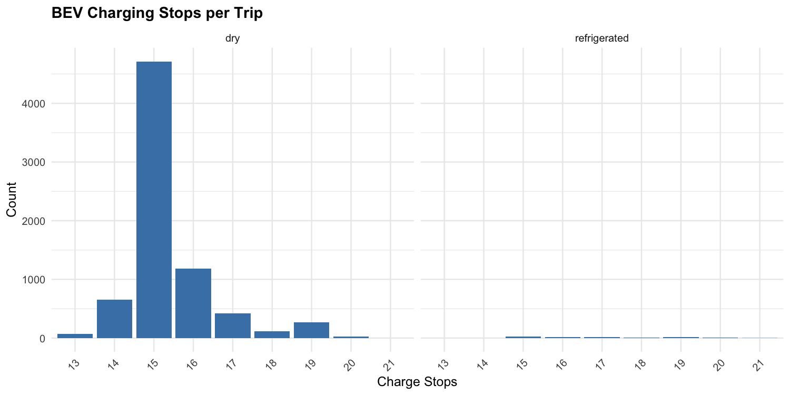
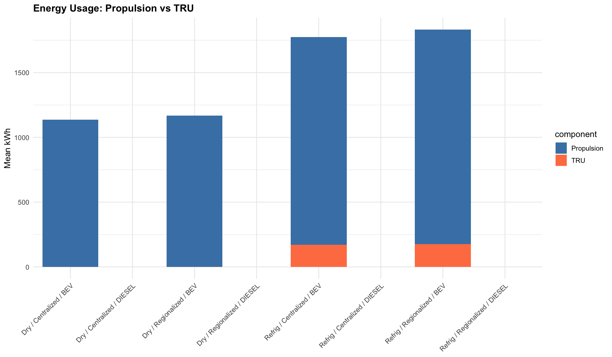
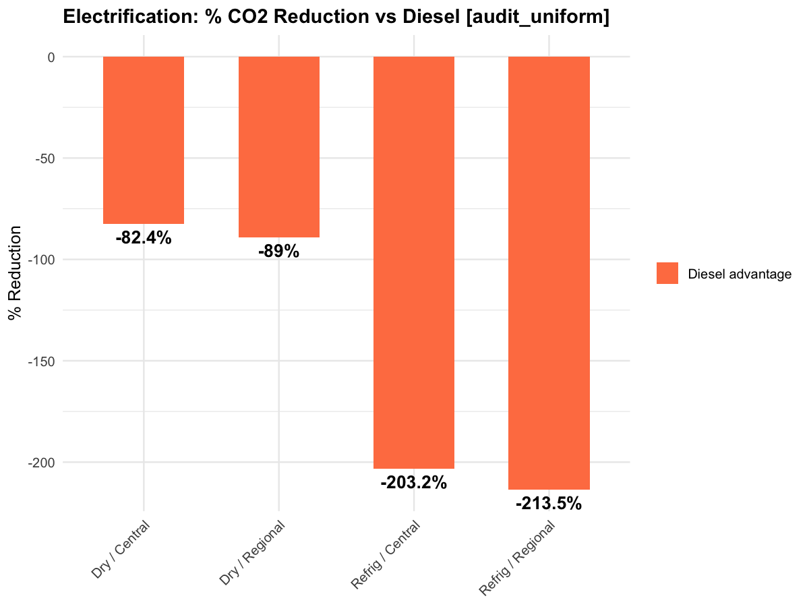
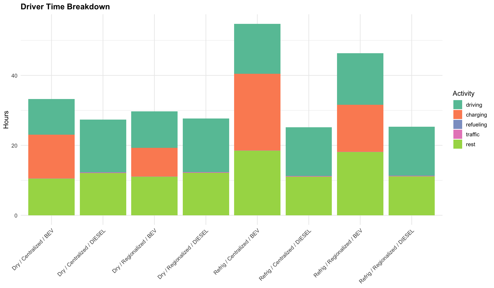
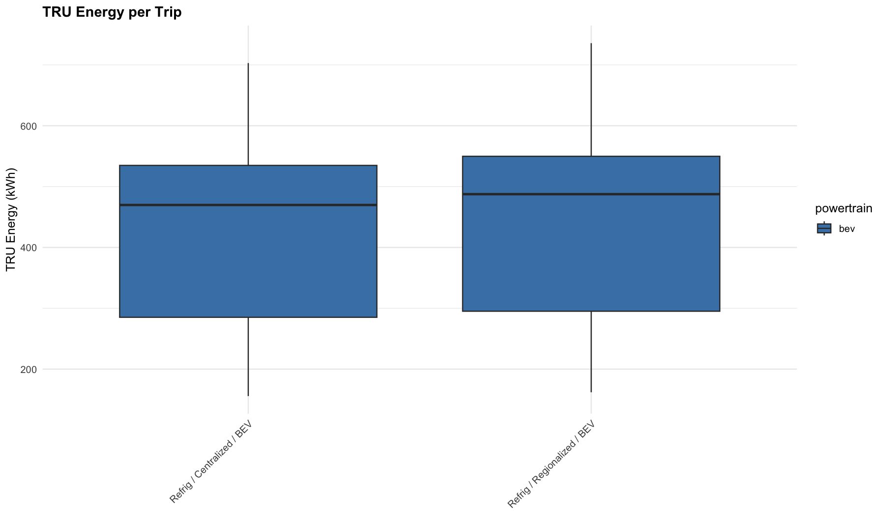
The BEV charging continuation fix (PR #31) resolved three root causes that prevented en-route DCFC charging events from being modeled. Pre-fix BEV runs showed 0 charging stops; post-fix runs correctly model charging stops proportional to route distance.
The table below compares BEV runs before and after the charging fix, demonstrating that the fix produced the expected non-zero charging stops and associated energy/time impacts.
| product_type | has_charging | n | mean_co2_kg | mean_co2_per_1000kcal | mean_trip_h | mean_energy_kwh | mean_distance | fu_method |
|---|---|---|---|---|---|---|---|---|
| dry | TRUE | 11554 | 1738.32 | 0.0284 | 85.92 | 4025.5 | 1743 | audit_uniform |
| refrigerated | TRUE | 200 | 1872.71 | 0.0463 | 89.55 | 4435.1 | 1743 | audit_uniform |
The choice of FU denominator is a first-order determinant of the BEV-vs-diesel comparison. Four methods were evaluated:
Under cube-limited physical loading (phase2), refrigerated product fills only ~3.4 tonnes per truck due to case geometry. BEV’s lower absolute CO2 per trip gives it a ~57% advantage. Under trailer-max normalization (audit-uniform), payload is assumed at ~19 tonnes, inflating kcal_delivered by ~5.6x for refrigerated freight and compressing per-FU emissions — erasing the BEV advantage. This is an artifact of the denominator assumption, not a real change in energy efficiency.
Recommendation: Report denominator-free metrics (CO2/tonne-km, CO2/mile) alongside FU-based results. The FU sensitivity is itself a finding worth reporting.
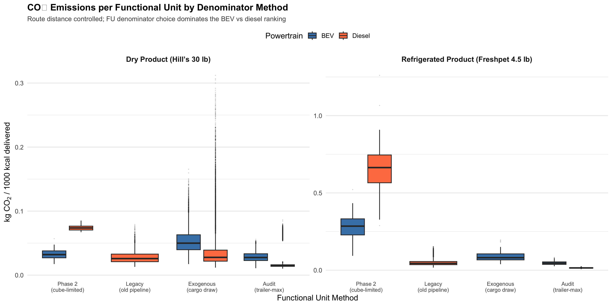
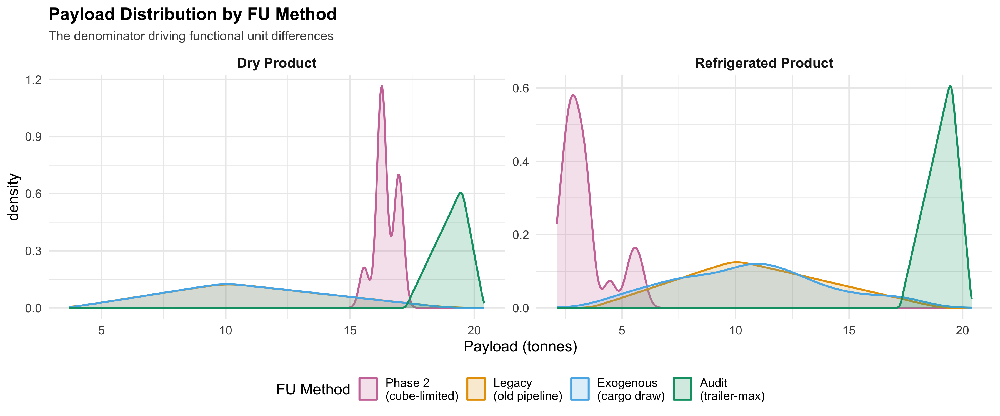
| Scenario | N | Mean CO2/1000kcal | Median | P05 | P95 |
|---|---|---|---|---|---|
| dry_bev | 20 | 0.032456 | 0.032067 | 0.018103 | 0.048176 |
| dry_diesel | 20 | 0.074290 | 0.073696 | 0.069105 | 0.083144 |
| refrigerated_bev | 20 | 0.288330 | 0.284909 | 0.140584 | 0.437945 |
| refrigerated_diesel | 20 | 0.668364 | 0.663923 | 0.325368 | 1.075532 |

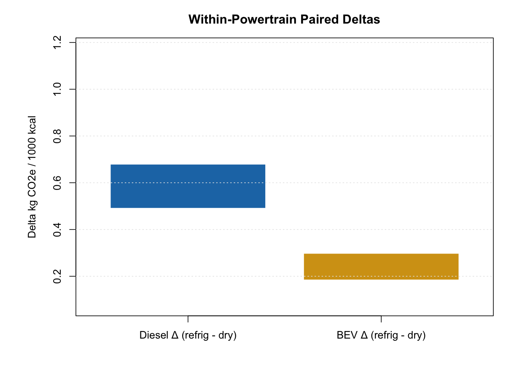
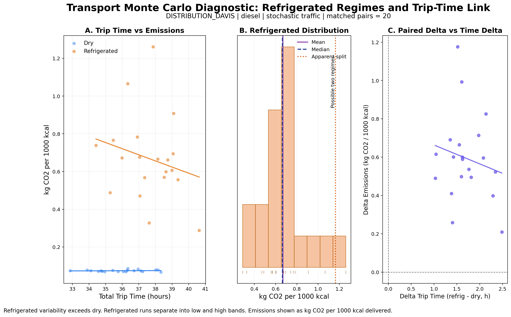
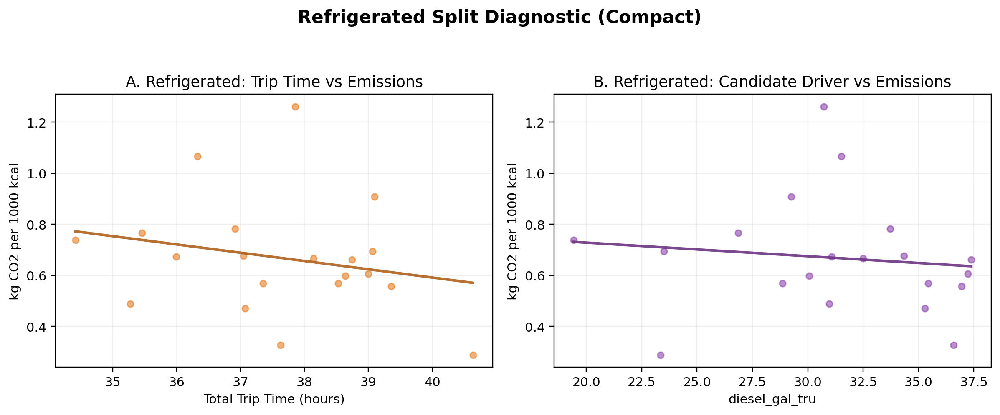
N_REPS=1) passed with expected paired structure and route identity checks.chunk_done id=1 reps_done=2/20, then chunk_start id=2.# 1) Merge run batches for reporting
Rscript tools/merge_mc_batches.R \
--bundle_roots outputs/distribution/local_chunked_run/phase2/diesel,outputs/distribution/local_chunked_run/phase2/bev \
--runs_out outputs/summaries/local_chunked_run_runs_merged.csv \
--summary_out outputs/summaries/local_chunked_run_summary_merged.csv
# 2) Build presentation/scientific graphics + route animations
RUN_BEV_VALIDATION=false RUN_ADVANCED_DIAGNOSTICS=true RUN_SCIENTIFIC_GRAPHICS=true \
RUN_BEV_GROUPING_DIAGNOSTIC=false RUN_ROUTE_ANIMATION=true \
BUNDLE_ROOT=outputs/distribution/local_chunked_run/phase2 \
OUTDIR=outputs/presentation/transport_graphics_local_chunked_run \
RUNS_CSV=outputs/summaries/local_chunked_run_runs_merged.csv \
ANIM_OUTDIR=docs/assets/transport/animations/local_chunked_run \
bash tools/regenerate_transport_graphics.sh local_chunked_run
# 3) Render site
quarto render site/